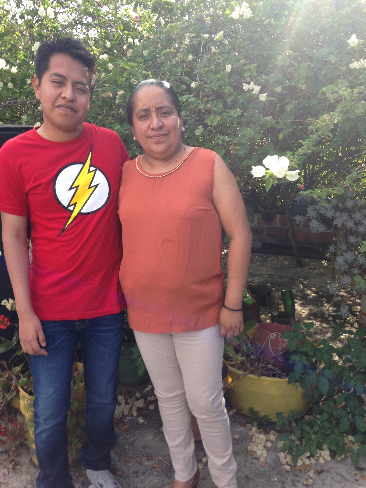

los hombres en mi familia
papá
el se llama sixto cortes salas, tiene 57 años,le gusta el basquetball, casi no come carne y le gustan los videojuegos,su mama se llama maria y su papa juan

yo
me llamo Allan Cortes Amador,soy hijo unico, soy estudiante de la carrera de diseño grafico, estoy actualmente en el sexto semestre.

las mujeres en mi familia
mamá
se llama laura alicia amador dionicio, tiene 50 años,es secretaria y su mama se llama angela y su papá eulogio, tiene dose hermanas.